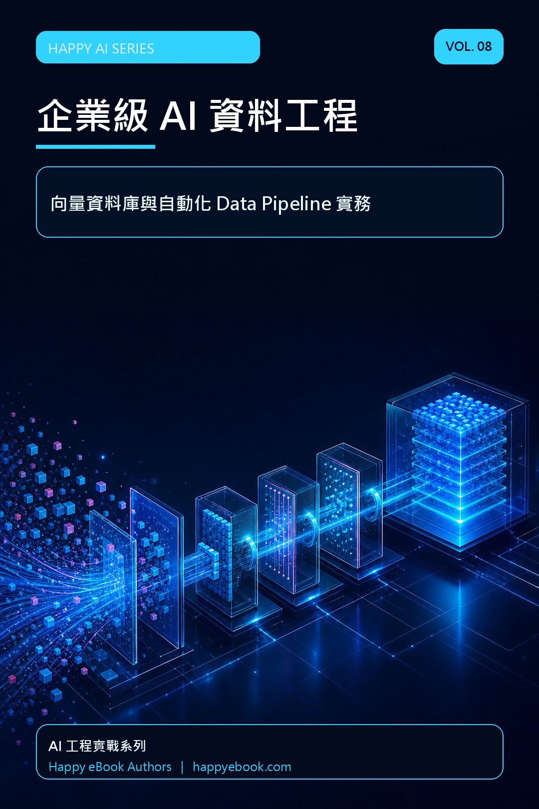

Google Play Books
企業級 AI 資料工程（Vol.8）
向量資料庫與自動化 Data Pipeline 實務

付費購買提供試閱版
企業級 AI 資料工程（Vol.8）
向量資料庫與自動化 Data Pipeline 實務
企業導入 AI，真正困難的往往不是模型，而是資料。格式混亂、品質不一、缺乏權限控管，會讓再強的模型也產生錯誤與幻覺。 《Vol.8 企業級 AI 資料工程》以實務流程帶你建立 AI 時代的資料基礎。全書從資料品質、資料湖、ETL 與清洗開始，進一步說明 Embedding、向量資料庫、Chunking、合成資料、自動化 Data Pipeline、即時串流與資料治理，最後回到 Data-Centric AI 的核心思維。 每章包含情境故事、原理解析、實作練習、企業案例與重點整理，適合希望建置 RAG、知識庫與企業 AI 系統的資料工程師、後端工程師及技術主管。讀完後，你將更清楚資料如何被擷取、清洗、切分、索引、檢索、監控與治理，並能規劃一條可維護、可擴充的 AI 資料管線。